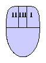
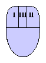

Um Linkshändern das Lesen der (deutschen) Dokumentation zu erleichtern, wird hier nicht von der linken oder rechten Maustaste gesprochen, sondern von der primären und der sekundären Maustaste (Maustaste I bzw. Maustaste II). Dabei wird die Maustaste I jeweils mit dem Zeigefinder bedient:
|  |  | |
| Linkshänder-Maus | Rechtshänder-Maus |